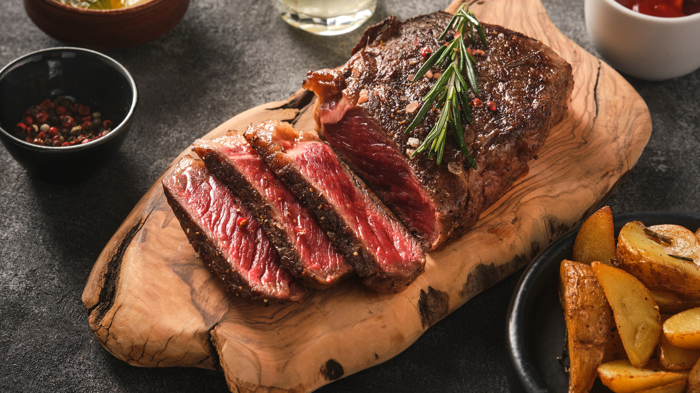

Steak Recipe

Medium Rare Pan Seared Steak Recipe
This is one of my personal favorite steak recipes of all time.
A pan seared medium rare steak provides all the natural, juicy flavors
expected of prime meat. We will be enhancing these tones by adding
flavorful seasoning and a mouth watering, buttery sear leaving you
speechless!
Ingredients
- Prime Steak (New york or ribeye)
- Salt
- Pepper
- Garlic powder
- Butter (unsalted)
- Thyme
- Olive oil
Steps
- Coat room tempurature steak with salt, pepper and garlic powder
- Preheat pan (preferably cast iron) to Med-High heat and place olive oil in pan
- Place a modest amount of Olive oil in the pan